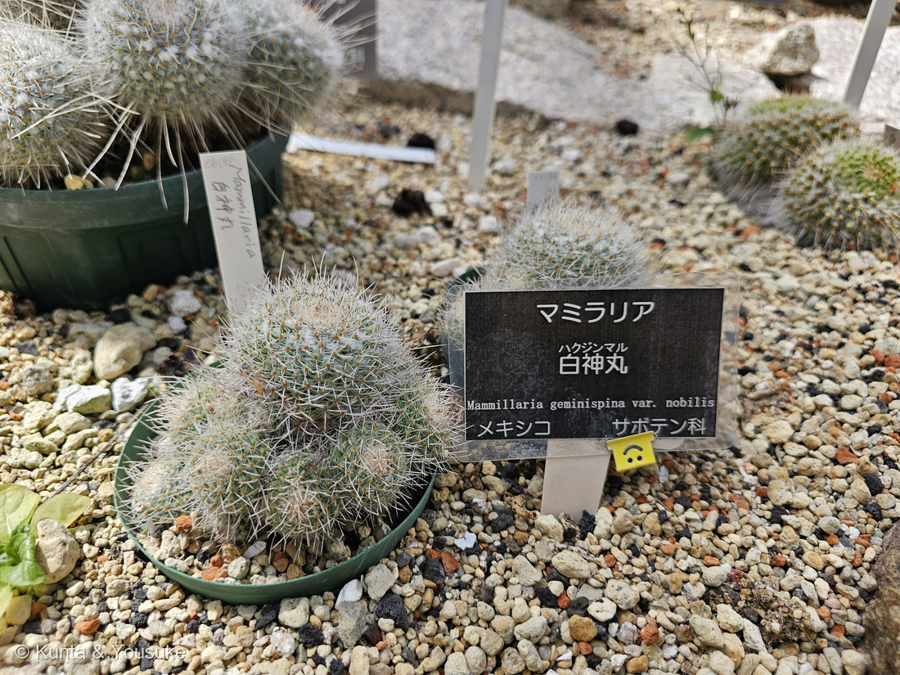

地図を読み込んでいるよ…
🔍 写真も地図も、押しているあいだ拡大して見られるよ（スマホは指を置いてすこし待ってね）。
🌍 の地図＝この子がもともと自生している場所を緑に。メキシコ中部（イダルゴ州・ケレタロ州・サンルイスポトシ州）。標高1,000〜1,850m。くわしくは下の地図の説明を見てね。
⭐メキシコだけの子だよ。⚠この緑のうち、実際にいるのは中部の三つの州――Henry Shaw Cactus and Succulent Society は「in parts of three central Mexican states: Hidalgo, Queretaro and San Luis Potosi」「areas ranging from 1,000 to 1,850 meters in altitude」とする＝イダルゴ州・ケレタロ州・サンルイスポトシ州の、標高1,000〜1,850mの高原。⭐⭐三兄弟のまん中で、住んでいる場所もちょうどまん中――242 シラボシは北東部（730〜1,350m）、244 ハクダマルは南部（850〜1,650m）。⭐この子がいちばん高いところにいる。⭐ぼくらが会ったのは温室だから、この緑の外だよ。
⚠ 地図は国（日本と中国だけ県・省）までしか塗れないから、ほんとうの分布より広く見えていることがあるよ。地図はだいたいの場所。正確なところは、上の文を見てね。
ハクジンマル（白神丸）
Mammillaria geminispina Haw. var. nobilis
別名 ツインスパインド・カクタス（Twin-spined Cactus） 原産 メキシコ中部（イダルゴ州・ケレタロ州・サンルイスポトシ州）・標高1,000〜1,850m
サボテン科 · Cactaceae（マミラリア属 Mammillaria・ナデシコ目 Caryophyllales）── ⭐図鑑で4人目のサボテン科／⭐⭐マミラリア属では2人目（242 シラボシと同じ日・同じ温室・7秒後）／⚠科は増えないので97科のまま
燻太さんの一言「マミラリア属の三兄弟。名札を見るに、みんな別種みたい。」── ⭐⭐そのとおり。しかも三人とも「白い」のに、白くなり方がちがったよ
⭐ 名前と学名の由来 ──「双子の刺」
- ⭐⭐種小名 geminispina ＝ gemini（双子）＋ spina（刺）。「Mammillaria geminispina is named for the pattern of its spination – twin-spined」（Henry Shaw Cactus and Succulent Society）。
- ⭐変種名 nobilis は「気高い・立派な」。⭐⭐「One variety, called nobilis, has central spines up to 40 millimeters long」＝中刺が4cmにもなる。⭐写真①で、球からまっすぐ突き出している長い白い刺がそれだよ。
- ⭐和名「白神丸（はくじんまる）」＝白い刺におおわれた球（丸）。⭐サボテンの和名は「◯◯丸」がとても多いね（218 キンシャチは例外で「鯱」）。
この植物のこと ── メキシコ中部の高原
- ⭐自生地はイダルゴ州・ケレタロ州・サンルイスポトシ州（メキシコの中部）。「The plants live in areas ranging from 1,000 to 1,850 meters in altitude」（HSCactus）。
- ⭐⭐242 シラボシより、すこし高くて、すこし南。⭐同じ属でも、住んでいる場所がちゃんと分かれているんだ。
- ⭐疣の腋に、白い綿と長い剛毛＝「The axil is filled by white wool and 10 - 20 long white bristles」。⭐この子の「白さ」は、刺だけでなく腋の毛でも作られている。
- ⭐中刺は「2（多くて6）本、純白または先が黒く、ほかの刺よりずっと外へ突き出す、まっすぐか少し曲がる、長さ4cm以上」。
- ⭐群れて大きくなる＝茎は高さ18cm・径8cmほどでも、子をふいて差し渡し90cmの群落になることがある。⭐写真①のうしろの深い鉢が、そのはじまりかもしれないね。
⭐⭐⭐ 花は「輪」になって咲く ── なぜ輪なのか
- ⭐⭐マミラリア属の花は、体のてっぺんをぐるりと囲む輪になって咲く＝「They bloom in the typical Mammillaria ring around the top of the body, but frequently with only a few open flowers at a time, thus forming incomplete rings」（HSCactus）＝⚠一度に少しずつ咲くので、たいてい「欠けた輪」になる。
- ⭐⭐⭐なぜ輪になるのか。――242で書いたとおり、マミラリアの花は疣と疣のあいだ（腋）から出る。⭐そして花がつくのは、去年のびた疣の腋。⭐⭐去年の成長のあとが体をぐるりと一周しているから、花もその線にそって輪になるんだ。
- ⭐この子の花は「carmine red（濃い紅）」。⏳ぼくらが会ったのは8月で、花は咲いていなかったよ。⭐春に、また会いに行こうね。
参考＝Henry Shaw Cactus and Succulent Society・Mammillaria geminispina（「Mammillaria geminispina is named for the pattern of its spination – twin-spined」「The native habitat of Mammillaria geminispina is in parts of three central Mexican states: Hidalgo, Queretaro and San Luis Potosi. The plants live in areas ranging from 1,000 to 1,850 meters in altitude」「There is also some white wool in the axils between tubercles, particularly on the top surface」「There are actually sometimes up to six central spines」「One variety, called nobilis, has central spines up to 40 millimeters long」「They bloom in the typical Mammillaria ring around the top of the body, but frequently with only a few open flowers at a time, thus forming incomplete rings」）／OPTE 東海園芸・マミラリア（「ほとんどのサボテンは刺座から花が咲くのに対し、この属の花はイボとイボの間から咲きます」）／広島市植物公園の園名札